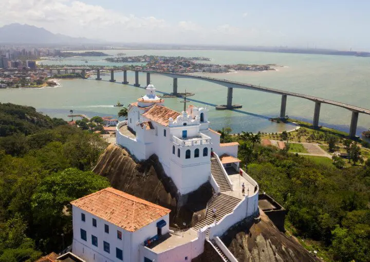
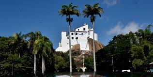
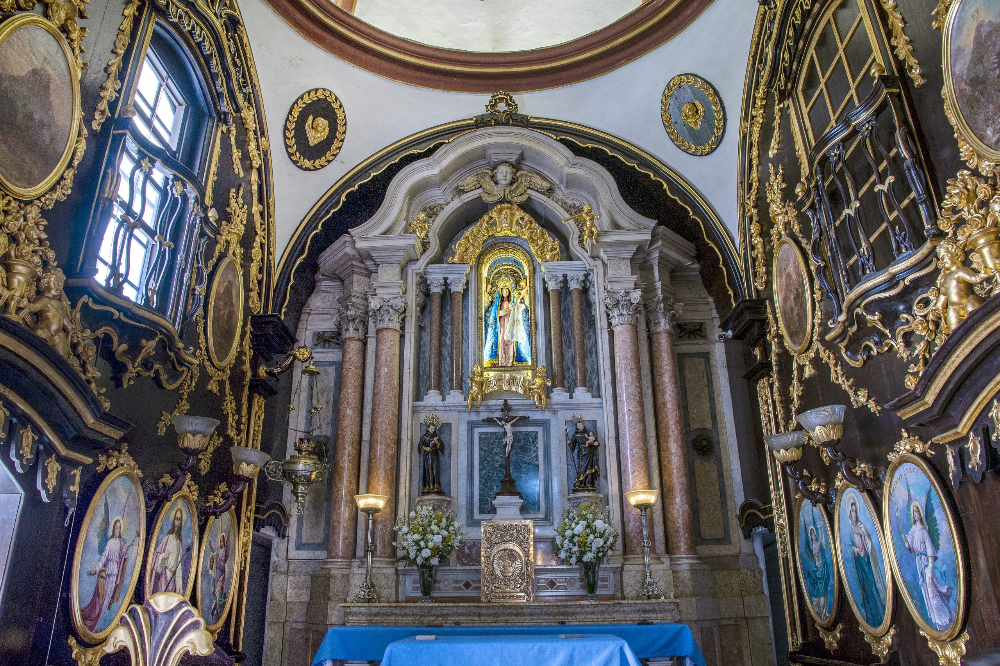

História do Convento da Penha
O Convento da Penha é o maior símbolo histórico, religioso e cultural do Estado do Espírito Santo. Erguido no topo de um penhasco de 154 metros de altitude em Vila Velha, o santuário está cercado por um remanescente preservado da Mata Atlântica e oferece uma das vistas panorâmicas mais espetaculares da baía de Vitória, da Terceira Ponte e do oceano.
Sua história começou em 1558 com a chegada de Frei Pedro Palácios, um frei franciscano espanhol que trouxe da Europa um painel de Nossa Senhora da Penha. Inicialmente, Frei Pedro morava em uma grota no pé do morro. Posteriormente, construiu a Ermida das Palmeiras no topo e, ao longo dos séculos XVI e XVII, a construção foi expandida até se transformar no imponente complexo arquitetônico que conhecemos hoje.
Arquitetura e Patrimônio Histórico
A edificação é um exemplar valioso da arquitetura colonial brasileira. Tombado pelo Instituto do Patrimônio Histórico e Artístico Nacional (IPHAN) em 1943, o Convento possui características marcantes:
- Igreja Principal: O altar-mor possui entalhes em madeira e revestimento em mármore, abrigando a imagem histórica de Nossa Senhora da Penha.
- Sala dos Milagres (Ex-votos): Espaço reservado para objetos, cartas e fotos deixados por fiéis como agradecimento por graças alcançadas.
- Campundagem e Mirantes: Pátios elevados de onde é possível contemplar as cidades de Vila Velha, Vitória e a Baía de Vitória.
- Acesso Secular: Além da estrada asfaltada, o santuário conta com a tradicional "Ladeira da Penitência" (ou Caminho das Sete Alegrias), percorrida a pé pelos devotos.
Festa da Penha: Tradição e Fé Capixaba
A Festa da Penha é considerada o maior evento religioso do Espírito Santo e o terceiro maior do Brasil. Celebrada no período do Oitavário da Páscoa (abril), a festa reúne cerca de 2 milhões de fiéis todos os anos ao longo de nove dias de comemorações.
Entre os momentos mais marcantes da festividade estão as grandes romarias:
- Romaria dos Homens: Caminhada noturna de mais de 14 km que sai da Catedral Metropolitana de Vitória e cruza a Baía até o Convento da Penha, reunindo centenas de milhares de devotos.
- Romaria das Mulheres: Tradição que reúne fiéis em uma caminhada de fé pelas ruas de Vila Velha durante a tarde do domingo festivo.
- Romarias Marítimas e de Motociclistas: Expressões culturais que demonstram a devoção de diferentes grupos da sociedade capixaba.
Curiosidades Importantes
- Ano de Fundação: 1558 (início da construção da ermida por Frei Pedro Palácios).
- Altitude: Localizado a 154 metros acima do nível do mar.
- Tombamento: Tombado como Patrimônio Histórico e Artístico Nacional (IPHAN) em 1943.
- Grota de Frei Pedro: A fenda na rocha onde o fundador viveu seus primeiros anos no Espírito Santo ainda preserva um painel comemorativo.
- Mata Atlântica: O morro onde o Convento se localiza é uma Unidade de Conservação (Parque de Penha) que preserva a vegetação nativa do litoral.
Informações Gerais e Acesso
- Localização: Rua Vasco Coutinho, Prainha - Vila Velha / ES.
- Fundador: Frei Pedro Palácios (Ordem dos Franciscanos).
- Administração: Província Franciscana da Imaculada Conceição do Brasil.
- Tipo: Patrimônio Histórico, Religioso, Ecológico e Turístico.
- Acesso ao Topo: Pode ser feito a pé (pela Ladeira da Penitência ou via asfaltada), de van oficial ou por veículos cadastrados.

